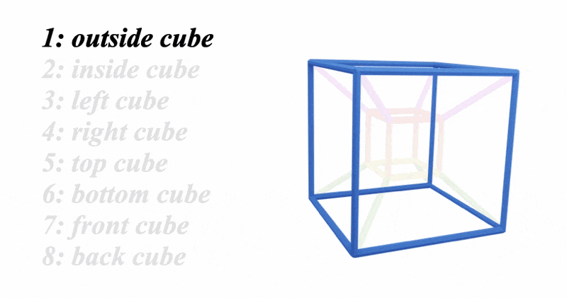
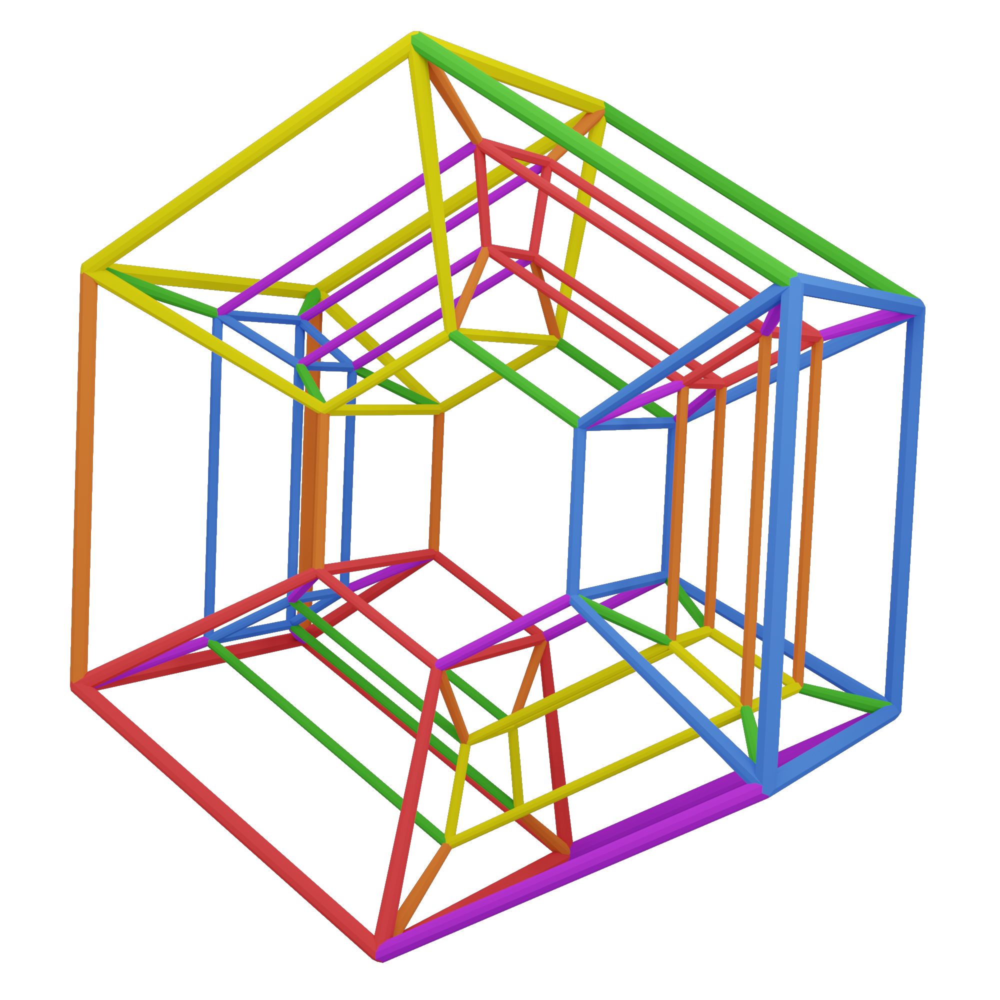

GEOMETRY:
The hypercube exists in four dimensions of space
When it comes to visualising and using the hypercube, none of this is essential
but it adds depth and is just really fun
There's also scope for using these deeper geometric insights musically
but thats for another day
- How a square becomes a cube
- How a cube becomes a hypercube
If we drew a cube on a piece of 2d paper
We could draw it like this, a little square inside a big square:
Its a small 2D square inside a bigger 2D square
A 2D person would think of it as simply one flat square inside another flat square in 2D space
But we know
A 2D square behind a 2D square in 3D space
We've got a little 3D cube inside a bigger 3D cube
We can see the 3D/4D analogy really clearly:
For us 3D people, thats the only way we can see the hypercube: little cube inside a big cube
but a 4D person would see the hypercube as having four dimensional depth with the bigger cube 'in front' of the smaller cube
We'll never truly see or grasp this
in the same way a 2D person will never see or grasp the 3D depth of a cube
(We can do the same with 4D)
Here are the 6 faces of the cube according to 2D people:
It's important to note that the last four squares appear shrunken and slanted to the 2D person
but to us 3D people, we know this is only a matter of perspective,
these squares are in fact not shruken or slanted
In 3D, all six squares are equal is size and shape
Here's the 8 cubes of the hypercube from our 3D perspective:
the front, back, left, right, top and bottom cubes appear shruken and slanted
But just like with the 3D cube, this is only because of our limited perspective
In 4D, all 8 cubes have equal size and perspective
Just like a 3D cube allows us to connect together multiple 2D squares,
the 4D hypercube allows us to connect together multiple 3D cubes.
By this same logic, the metaprism exists in 5D, because it allows us to connect together multiple 4D hypercubes
I do sometimes think with a bit of a 4D mind when dealing with hypercubes,
But other than its construction, I've not explored the metaprism much with a 5D perspective
When i showed my mathematician friend joe my chord wheel prototype (back in 2016)
The wheel was able to spin and had other spinning wheels upon the big wheel
He said,
"That's not a series of flat spinning wheels, its a shadow of a rotating 5D structure,
Every spin of a wheel is acctually a rotation in space"
He was right.
Anyway
There's loads of great resources on the internet/youtube about 4D and hypercubes if you want to learn more about this,
But 99% of the time im just thinking of all these things as simple intuitive 3D objects as we see them :)
Back to Hypercubes | Back to Geometry